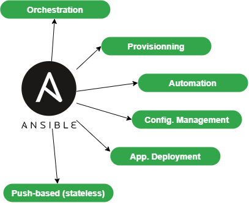

Ansible Basics¶
In this chapter you will learn how to work with Ansible.
Objectives: In this chapter you will learn how to:
 Implement Ansible;
Implement Ansible;
Apply configuration changes on a server;
Create first Ansible playbooks;
 ansible, module, playbook
ansible, module, playbook
Knowledge: 
Complexity:
Reading time: 30 minutes
Ansible centralizes and automates administration tasks. It is:
- agentless (it does not require specific deployments on clients),
- idempotent (same effect each time it is run)
It uses the SSH protocol to remotely configure Linux clients or the WinRM protocol to work with Windows clients. If none of these protocols is available, it is always possible for Ansible to use an API, which makes Ansible a real Swiss army knife for the configuration of servers, workstations, docker services, network equipment, etc. (Almost everything in fact).
Warning
The opening of SSH or WinRM flows to all clients from the Ansible server, makes it a critical element of the architecture that must be carefully monitored.
As Ansible is push-based, it will not keep the state of its targeted servers between each of its executions. On the contrary, it will perform new state checks each time it is executed. It is said to be stateless.
It will help you with:
- provisioning (deploying a new VM),
- application deployments
- configuration management,
- automation,
- orchestration (when more than 1 target is in use).

To offer a graphical interface to your daily use of Ansible, you can install some tools like Ansible Tower (RedHat), which is not free, its opensource counterpart Awx, or other projects like Jenkins and the excellent Rundeck can also be used.
Abstract
To follow this training, you will need at least 2 servers under Rocky8:
- the first one will be the management machine, Ansible will be installed on it.
- the second one will be the server to configure and manage (another Linux than Rocky Linux will do just as well).
In the examples below, the administration station has the IP address 172.16.1.10, the managed station 172.16.1.11. It is up to you to adapt the examples according to your IP addressing plan.
The Ansible vocabulary¶
- The management machine: the machine on which Ansible is installed. Since Ansible is agentless, no software is deployed on the managed servers.
- The inventory: a file containing information about the managed servers.
- The tasks: a task is a block defining a procedure to be executed (e.g. create a user or a group, install a software package, etc.).
- A module: a module abstracts a task. There are many modules provided by Ansible.
- The playbooks: a simple file in yaml format defining the target servers and the tasks to be performed.
- A role: a role allows you to organize the playbooks and all the other necessary files (templates, scripts, etc.) to facilitate the sharing and reuse of code.
- A collection: a collection includes a logical set of playbooks, roles, modules, and plugins.
- The facts: these are global variables containing information about the system (machine name, system version, network interface and configuration, etc.).
- The handlers: these are used to cause a service to be stopped or restarted in the event of a change.
Installation on the management server¶
Ansible is available in the EPEL repository but comes as version 2.9.21, which is quite old now. You can see how this is done by following along here, but skip the actual installation steps, as we will be installing the latest version. The EPEL is required for both versions, so you can go ahead and install that now:
- EPEL installation:
$ sudo dnf install epel-release
$ sudo dnf install ansible
$ ansible --version
2.9.21
python3-pip:
Note
Remove Ansible if you have installed it previously from EPEL.
$ sudo dnf install python38 python38-pip python38-wheel python3-argcomplete rust cargo curl
Note
python3-argcomplete is provided by EPEL. Please install epel-release if not done yet.
This package will help you complete Ansible commands.
Before we actually install Ansible, we need to tell Rocky Linux that we want to use the newly installed version of Python. The reason is that if we continue to the install without this, the default python3 (version 3.6 as of this writing), will be used instead of the newly installed version 3.8. Set the version you want to use by entering the following command:
sudo alternatives --set python /usr/bin/python3.8
sudo alternatives --set python3 /usr/bin/python3.8
We can now install Ansible:
$ sudo pip3 install ansible
$ sudo activate-global-python-argcomplete
Check your Ansible version:
$ ansible --version
ansible [core 2.11.2]
config file = None
configured module search path = ['/home/ansible/.ansible/plugins/modules', '/usr/share/ansible/plugins/modules']
ansible python module location = /usr/local/lib/python3.8/site-packages/ansible
ansible collection location = /home/ansible/.ansible/collections:/usr/share/ansible/collections
executable location = /usr/local/bin/ansible
python version = 3.8.6 (default, Jun 29 2021, 21:14:45) [GCC 8.4.1 20200928 (Red Hat 8.4.1-1)]
jinja version = 3.0.1
libyaml = True
Configuration files¶
The server configuration is located under /etc/ansible.
There are two main configuration files:
- The main configuration file
ansible.cfgwhere the commands, modules, plugins, and ssh configuration reside; - The client machine management inventory file
hostswhere the clients, and groups of clients are declared.
As we installed Ansible with pip, those files do not exist. We will have to create them by hand.
An example of the ansible.cfg is given here and an example of the hosts file here.
$ sudo mkdir /etc/ansible
$ sudo curl -o /etc/ansible/ansible.cfg https://raw.githubusercontent.com/ansible/ansible/devel/examples/ansible.cfg
$ sudo curl -o /etc/ansible/hosts https://raw.githubusercontent.com/ansible/ansible/devel/examples/hosts
The inventory file /etc/ansible/hosts¶
As Ansible will have to work with all your equipment to be configured, it is very important to provide it with one (or more) well-structured inventory file(s), which perfectly matches your organization.
It is sometimes necessary to think carefully about how to build this file.
Go to the default inventory file, which is located under /etc/ansible/hosts. Some examples are provided and commented:
# This is the default ansible 'hosts' file.
#
# It should live in /etc/ansible/hosts
#
# - Comments begin with the '#' character
# - Blank lines are ignored
# - Groups of hosts are delimited by [header] elements
# - You can enter hostnames or ip addresses
# - A hostname/ip can be a member of multiple groups
# Ex 1: Ungrouped hosts, specify before any group headers:
## green.example.com
## blue.example.com
## 192.168.100.1
## 192.168.100.10
# Ex 2: A collection of hosts belonging to the 'webservers' group:
## [webservers]
## alpha.example.org
## beta.example.org
## 192.168.1.100
## 192.168.1.110
# If you have multiple hosts following a pattern, you can specify
# them like this:
## www[001:006].example.com
# Ex 3: A collection of database servers in the 'dbservers' group:
## [dbservers]
##
## db01.intranet.mydomain.net
## db02.intranet.mydomain.net
## 10.25.1.56
## 10.25.1.57
# Here's another example of host ranges, this time there are no
# leading 0s:
## db-[99:101]-node.example.com
As you can see, the file provided as an example uses the INI format, which is well known to system administrators. Please note that you can choose another file format (like yaml for example), but for the first tests, the INI format is well adapted to our future examples.
Obviously, in production, the inventory can be generated automatically, especially if you have a virtualization environment like VMware VSphere or a cloud environment (Aws, Openstack or other).
- Creating a hostgroup in
/etc/ansible/hosts:
As you may have noticed, the groups are declared in square brackets. Then come the elements belonging to the groups. You can create, for example, a rocky8 group by inserting the following block into this file:
[rocky8]
172.16.1.10
172.16.1.11
Groups can be used within other groups. In this case, it must be specified that the parent group is composed of subgroups with the :chidren attribute like this:
[linux:children]
rocky8
debian9
[ansible:children]
ansible_management
ansible_clients
[ansible_management]
172.16.1.10
[ansible_clients]
172.16.1.10
We won't go any further for the moment on the subject of inventory, but if you're interested, consider checking this link.
Now that our management server is installed and our inventory is ready, it's time to run our first ansible commands.
ansible command line usage¶
The ansible command launches a task on one or more target hosts.
ansible <host-pattern> [-m module_name] [-a args] [options]
Examples:
Warning
Since we have not yet configured authentication on our 2 test servers, not all the following examples will work. They are given as examples to facilitate understanding, and will be fully functional later in this chapter.
- List the hosts belonging to the rocky8 group:
ansible rocky8 --list-hosts
- Ping a host group with the
pingmodule:
ansible rocky8 -m ping
- Display facts from a host group with the
setupmodule:
ansible rocky8 -m setup
- Run a command on a host group by invoking the
commandmodule with arguments:
ansible rocky8 -m command -a 'uptime'
- Run a command with administrator privileges:
ansible ansible_clients --become -m command -a 'reboot'
- Run a command using a custom inventory file:
ansible rocky8 -i ./local-inventory -m command -a 'date'
Note
As in this example, it is sometimes simpler to separate the declaration of managed devices into several files (by cloud project for example) and provide Ansible with the path to these files, rather than to maintain a long inventory file.
| Option | Information |
|---|---|
-a 'arguments' |
The arguments to pass to the module. |
-b -K |
Requests a password and runs the command with higher privileges. |
--user=username |
Uses this user to connect to the target host instead of the current user. |
--become-user=username |
Executes the operation as this user (default: root). |
-C |
Simulation. Does not make any changes to the target but tests it to see what should be changed. |
-m module |
Runs the module called |
Preparing the client¶
On both management machine and clients, we will create an ansible user dedicated to the operations performed by Ansible. This user will have to use sudo rights, so it will have to be added to the wheel group.
This user will be used:
- On the administration station side: to run
ansiblecommands and ssh to managed clients. - On the managed stations (here the server that serves as your administration station also serves as a client, so it is managed by itself) to execute the commands launched from the administration station: it must therefore have sudo rights.
On both machines, create an ansible user, dedicated to ansible:
$ sudo useradd ansible
$ sudo usermod -aG wheel ansible
Set a password for this user:
$ sudo passwd ansible
Modify the sudoers config to allow members of the wheel group to sudo without password:
$ sudo visudo
Our goal here is to comment out the default, and uncomment the NOPASSWD option so that these lines looks like this when we are done:
## Allows people in group wheel to run all commands
# %wheel ALL=(ALL) ALL
## Same thing without a password
%wheel ALL=(ALL) NOPASSWD: ALL
Warning
If you receive the following error message when entering Ansible commands, it probably means that you forgot this step on one of your clients:
"msg": "Missing sudo password
When using management from this point on, start working with this new user:
$ sudo su - ansible
Test with the ping module¶
By default password login is not allowed by Ansible.
Uncomment the following line from the [defaults] section in the /etc/ansible/ansible.cfg configuration file and set it to True:
ask_pass = True
Run a ping on each server of the rocky8 group:
# ansible rocky8 -m ping
SSH password:
172.16.1.10 | SUCCESS => {
"changed": false,
"ping": "pong"
}
172.16.1.11 | SUCCESS => {
"changed": false,
"ping": "pong"
}
Note
You are asked for the ansible password of the remote servers, which is a security problem...
Tip
If you get this error "msg": "to use the 'ssh' connection type with passwords, you must install the sshpass program", you can just install sshpass on the management station:
$ sudo dnf install sshpass
Abstract
You can now test the commands that didn't work previously in this chapter.
Key authentication¶
Password authentication will be replaced by a much more secure private/public key authentication.
Creating an SSH key¶
The dual-key will be generated with the command ssh-keygen on the management station by the ansible user:
[ansible]$ ssh-keygen
Generating public/private rsa key pair.
Enter file in which to save the key (/home/ansible/.ssh/id_rsa):
Enter passphrase (empty for no passphrase):
Enter same passphrase again:
Your identification has been saved in /home/ansible/.ssh/id_rsa.
Your public key has been saved in /home/ansible/.ssh/id_rsa.pub.
The key fingerprint is:
SHA256:Oa1d2hYzzdO0e/K10XPad25TA1nrSVRPIuS4fnmKr9g ansible@localhost.localdomain
The key's randomart image is:
+---[RSA 3072]----+
| .o . +|
| o . =.|
| . . + +|
| o . = =.|
| S o = B.o|
| = + = =+|
| . + = o+B|
| o + o *@|
| . Eoo .+B|
+----[SHA256]-----+
The public key can be copied to the servers:
# ssh-copy-id ansible@172.16.1.10
# ssh-copy-id ansible@172.16.1.11
Re-comment the following line from the [defaults] section in the /etc/ansible/ansible.cfg configuration file to prevent password authentication:
#ask_pass = True
Private key authentication test¶
For the next test, the shell module, allowing remote command execution, is used:
# ansible rocky8 -m shell -a "uptime"
172.16.1.10 | SUCCESS | rc=0 >>
12:36:18 up 57 min, 1 user, load average: 0.00, 0.00, 0.00
172.16.1.11 | SUCCESS | rc=0 >>
12:37:07 up 57 min, 1 user, load average: 0.00, 0.00, 0.00
No password is required, private/public key authentication works!
Note
In production environment, you should now remove the ansible passwords previously set to enforce your security (as now an authentication password is not necessary).
Using Ansible¶
Ansible can be used from the shell or via playbooks.
The modules¶
The list of modules classified by category can be found here. Ansible offers more than 750!
The modules are now grouped into module collections, a list of which can be found here.
Collections are a distribution format for Ansible content that can include playbooks, roles, modules, and plugins.
A module is invoked with the -m option of the ansible command:
ansible <host-pattern> [-m module_name] [-a args] [options]
There is a module for almost every need! It is thus advised, instead of using the shell module, to look for a module adapted to the need.
Each category of need has its own module. Here is a non exhaustive list:
| Type | Examples |
|---|---|
| System Management | user (users management), group (groups management), etc. |
| Software management | dnf,yum, apt, pip, npm |
| File management | copy, fetch, lineinfile, template, archive |
| Database management | mysql, postgresql, redis |
| Cloud management | amazon S3, cloudstack, openstack |
| Cluster management | consul, zookeeper |
| Send commands | shell, script, expect |
| Downloads | get_url |
| Source management | git, gitlab |
Example of software installation¶
The dnf module allows for the installation of software on the target clients:
# ansible rocky8 --become -m dnf -a name="httpd"
172.16.1.10 | SUCCESS => {
"changed": true,
"msg": "",
"rc": 0,
"results": [
...
\n\nComplete!\n"
]
}
172.16.1.11 | SUCCESS => {
"changed": true,
"msg": "",
"rc": 0,
"results": [
...
\n\nComplete!\n"
]
}
The installed software being a service, it is now necessary to start it with the module systemd:
# ansible rocky8 --become -m systemd -a "name=httpd state=started"
172.16.1.10 | SUCCESS => {
"changed": true,
"name": "httpd",
"state": "started"
}
172.16.1.11 | SUCCESS => {
"changed": true,
"name": "httpd",
"state": "started"
}
Tip
Try to launch those last 2 commands twice. You will observe that the first time Ansible will take actions to reach the state set by the command. The second time, it will do nothing because it will have detected that the state is already reached!
Exercises¶
To help discover more about Ansible and to get used to searching the Ansible documentation, here are some exercises you can do before going on:
- Create the groups Paris, Tokio, NewYork
- Create the user
supervisor - Change the user to have a uid of 10000
- Change the user so that it belongs to the Paris group
- Install the tree software
- Stop the crond service
- Create en empty file with
644rights - Update your client distribution
- Restart your client
Warning
Do not use the shell module. Look in the documentation for the appropriate modules!
setup module: introduction to facts¶
The system facts are variables retrieved by Ansible via its setup module.
Take a look at the different facts of your clients to get an idea of the amount of information that can be easily retrieved via a simple command.
We'll see later how to use facts in our playbooks and how to create our own facts.
# ansible ansible_clients -m setup | less
192.168.1.11 | SUCCESS => {
"ansible_facts": {
"ansible_all_ipv4_addresses": [
"192.168.1.11"
],
"ansible_all_ipv6_addresses": [
"2001:861:3dc3:fcf0:a00:27ff:fef7:28be",
"fe80::a00:27ff:fef7:28be"
],
"ansible_apparmor": {
"status": "disabled"
},
"ansible_architecture": "x86_64",
"ansible_bios_date": "12/01/2006",
"ansible_bios_vendor": "innotek GmbH",
"ansible_bios_version": "VirtualBox",
"ansible_board_asset_tag": "NA",
"ansible_board_name": "VirtualBox",
"ansible_board_serial": "NA",
"ansible_board_vendor": "Oracle Corporation",
...
Now that we have seen how to configure a remote server with Ansible on the command line, we will be able to introduce the notion of playbook. Playbooks are another way to use Ansible, which is not much more complex, but which will make it easier to reuse your code.
Playbooks¶
Ansible's playbooks describe a policy to be applied to remote systems, to force their configuration. Playbooks are written in an easily understandable text format that groups together a set of tasks: the yaml format.
Note
Learn more about yaml here
ansible-playbook <file.yml> ... [options]
The options are identical to the ansible command.
The command returns the following error codes:
| Code | Error |
|---|---|
0 |
OK or no matching host |
1 |
Error |
2 |
One or more hosts are failing |
3 |
One or more hosts are unreachable |
4 |
Analyze error |
5 |
Bad or incomplete options |
99 |
Run interrupted by user |
250 |
Unexpected error |
Note
Please note that ansible will return Ok when there is no host matching your target, which might mislead you!
Example of Apache and MySQL playbook¶
The following playbook allows us to install Apache and MariaDB on our target servers.
Create a test.yml file with the following content:
---
- hosts: rocky8 <1>
become: true <2>
become_user: root
tasks:
- name: ensure apache is at the latest version
dnf: name=httpd,php,php-mysqli state=latest
- name: ensure httpd is started
systemd: name=httpd state=started
- name: ensure mariadb is at the latest version
dnf: name=mariadb-server state=latest
- name: ensure mariadb is started
systemd: name=mariadb state=started
...
- <1> The targeted group or the targeted server must exist in the inventory
- <2> Once connected, the user becomes
root(viasudoby default)
The execution of the playbook is done with the command ansible-playbook:
$ ansible-playbook test.yml
PLAY [rocky8] ****************************************************************
TASK [setup] ******************************************************************
ok: [172.16.1.10]
ok: [172.16.1.11]
TASK [ensure apache is at the latest version] *********************************
ok: [172.16.1.10]
ok: [172.16.1.11]
TASK [ensure httpd is started] ************************************************
changed: [172.16.1.10]
changed: [172.16.1.11]
TASK [ensure mariadb is at the latest version] **********************************
changed: [172.16.1.10]
changed: [172.16.1.11]
TASK [ensure mariadb is started] ***********************************************
changed: [172.16.1.10]
changed: [172.16.1.11]
PLAY RECAP *********************************************************************
172.16.1.10 : ok=5 changed=3 unreachable=0 failed=0
172.16.1.11 : ok=5 changed=3 unreachable=0 failed=0
For more readability, it is recommended to write your playbooks in full yaml format. In the previous example, the arguments are given on the same line as the module, the value of the argument following its name separated by an =. Look at the same playbook in full yaml:
---
- hosts: rocky8
become: true
become_user: root
tasks:
- name: ensure apache is at the latest version
dnf:
name: httpd,php,php-mysqli
state: latest
- name: ensure httpd is started
systemd:
name: httpd
state: started
- name: ensure mariadb is at the latest version
dnf:
name: mariadb-server
state: latest
- name: ensure mariadb is started
systemd:
name: mariadb
state: started
...
Tip
dnf is one of the modules that allow you to give it a list as argument.
Note about collections: Ansible now provides modules in the form of collections.
Some modules are provided by default within the ansible.builtin collection, others must be installed manually via the:
ansible-galaxy collection install [collectionname]
The previous example should be written like this:
---
- hosts: rocky8
become: true
become_user: root
tasks:
- name: ensure apache is at the latest version
ansible.builtin.dnf:
name: httpd,php,php-mysqli
state: latest
- name: ensure httpd is started
ansible.builtin.systemd:
name: httpd
state: started
- name: ensure mariadb is at the latest version
ansible.builtin.dnf:
name: mariadb-server
state: latest
- name: ensure mariadb is started
ansible.builtin.systemd:
name: mariadb
state: started
...
A playbook is not limited to one target:
---
- hosts: webservers
become: true
become_user: root
tasks:
- name: ensure apache is at the latest version
ansible.builtin.dnf:
name: httpd,php,php-mysqli
state: latest
- name: ensure httpd is started
ansible.builtin.systemd:
name: httpd
state: started
- hosts: databases
become: true
become_user: root
- name: ensure mariadb is at the latest version
ansible.builtin.dnf:
name: mariadb-server
state: latest
- name: ensure mariadb is started
ansible.builtin.systemd:
name: mariadb
state: started
...
You can check the syntax of your playbook:
$ ansible-playbook --syntax-check play.yml
Exercices results¶
- Create the groups Paris, Tokio, NewYork
- Create the user
supervisor - Change the user to have a uid of 10000
- Change the user so that it belongs to the Paris group
- Install the tree software
- Stop the crond service
- Create en empty file with
0644rights - Update your client distribution
- Restart your client
ansible ansible_clients --become -m group -a "name=Paris"
ansible ansible_clients --become -m group -a "name=Tokio"
ansible ansible_clients --become -m group -a "name=NewYork"
ansible ansible_clients --become -m user -a "name=Supervisor"
ansible ansible_clients --become -m user -a "name=Supervisor uid=10000"
ansible ansible_clients --become -m user -a "name=Supervisor uid=10000 groups=Paris"
ansible ansible_clients --become -m dnf -a "name=tree"
ansible ansible_clients --become -m systemd -a "name=crond state=stopped"
ansible ansible_clients --become -m copy -a "content='' dest=/tmp/test force=no mode=0644"
ansible ansible_clients --become -m dnf -a "name=* state=latest"
ansible ansible_clients --become -m reboot